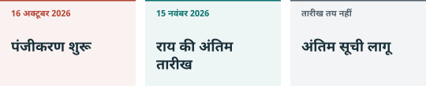

01. क्या बदला और कब¶
एक घोषणा, दो समयरेखाएं¶

वाणिज्य मंत्रालय और विज्ञान एवं प्रौद्योगिकी मंत्रालय ने 16 अक्टूबर 2026 को घोषणा 48 जारी की। एक भाग निर्यात प्रतिबंधित और सीमित तकनीक सूची में बदलाव पर राय मांगता है। दूसरा संबंधित निर्यात से पहले तत्काल अस्थायी पंजीकरण लागू करता है। पंजीकरण शुरू होने से मसौदे के सभी नए प्रतिबंध अंतिम कानून नहीं बन जाते। CN48
राय 16 अक्टूबर से 15 नवंबर तक दी जा सकती है। अस्थायी पंजीकरण संशोधित सूची के औपचारिक प्रकाशन और लागू होने तक चलेगा। समाप्ति की तय तारीख नहीं है। इस संस्करण के लिए जांचे स्रोतों में हमें इस मसौदे को बदलने वाली अंतिम सूची नहीं मिली। बाद की घोषणा स्थिति बदल सकती है। CN48
किस तरह का हस्तांतरण¶
विदेश में स्वामित्व देना, घरेलू तकनीक के विदेशी उपयोग की अनुमति देना, और घरेलू तकनीक का मालिक या वास्तविक नियंत्रक विदेशी संस्था बनना शामिल है। मंत्रालय दूसरे मामले भी सूचित कर सकता है। अधूरे निर्यात भी आते हैं। इसलिए सामान सीमा पार न करे तब भी कंपनी का सौदा महत्वपूर्ण हो सकता है। अंतिम बात नियंत्रण वाले प्रावधान से हमारा निष्कर्ष है। CN48, भाग III
पंजीकरण ecomp.mofcom.gov.cn के तकनीक व्यापार अनुप्रयोग में होता है। इसमें निर्यातक, पाने वाला, देश, तकनीक, उपयोग और अनुमानित मूल्य आता है। एक बार में एक ही पक्ष को कई तकनीकें देने पर विवरण जोड़ा जा सकता है; अन्य मामले सामान्यतः अलग होंगे। पंजीकरण खुद निर्यात अनुमति नहीं है। CN48 CN-A2
प्रतिबंध अपने दायरे में निर्यात रोकता है। सीमित श्रेणी अनुमति का रास्ता रखती है। स्वत: अनुमति में भी प्रक्रिया होती है। छूट किसी खास दायरे से बाहर करती है। शीर्षक से पहले शर्तें पढ़ना जरूरी है। CN-A1
मान लें नवंबर में निजी मॉडल तकनीक विदेश में देने का करार है। हमें मौजूदा पंजीकरण और कानून देखना होगा। राय की अवधि खत्म होने तक इंतजार काफी नहीं, लेकिन मसौदे से ही पूरे सौदे को पहले से प्रतिबंधित कहना भी गलत होगा। यह सिर्फ समझाने का उदाहरण है।